Luna is with you when you're scared
Introduction
PTSS
PTSS, Post Traumatische Stress Stoornis, is een stoornis dat kan voorkomen bij kinderen. Door deze stoornis kan het zijn dat uw kind regelmatig wakker wordt in de avond omdat hij of zij bang is, de ademhaling gaat snel en
komt moeilijk tot rust.
Luna is dan perfect om de nachtrust te verbeteren!
Luna
Met Luna komt de ademhaling weer tot rust brengt het lichaam in de ontspanningsmodus. Zo kunt uw kind, zonder dat u zich zorgen hoef te maken, beter slapen.
The Story of Luna
Ademen
Wanneer Luna wordt geactiveerd, sychroniseert Luna met de ademhalingsritme. Daarom maakt Luna je ademhaling geleidelijk trager, waardoor de hartslag wordt verlaagd.
Hartslagmeter
Luna meet de hartslag, als deze te snel wordt signaleert Luna dus een verhoging adrenaline en dus een verhoging van angstgevoelens, waardoor Luna het ademen start.
Comfort
Door de vorm van Luna geeft het de perfecte comfort. Je kunt haar namelijk op meerdere manieren vasthouden!
Aan
Met deze knop activeer je Luna en zegt "slaap zacht"
Uit
Met deze knop laad je Luna op en zegt "goede morgen"
Reviews
Henk - vader van 5-jarige dochter
Ik ben erg tevreden over hoe Luna mijn kind helpt wanneer zij ongerust wakker wordt. Mjin dochter heeft Luna al een tijdje gebruikt en haar nachtrust is al een stukje vooruit gegaan. Luna is zeker een vriend geworden voor mijn dochter.
Emily - Moeder van 7-jarige zoon
Mijn zoon slaapt al een stuk beter met Luna. Hij vindt het ook erg fijn dat je Luna op meerdere manieren kan vasthouden.